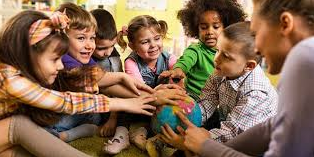

Cultural and diversity contexts in early childhood education encompass the unique experiences of First Nations families, immigrant families, and refugee communities. Australia’s population is culturally diverse, with over 30% of residents born overseas and more than 500 Aboriginal and Torres Strait Islander nations contributing to rich cultural traditions (Youssef, Thompson, Claridge, Nicholson, & Oberklaid, 2016). Cultural and linguistic diversity influences children’s identity formation, language acquisition, learning styles, and social interactions (Anderson, Anderson, Hare, & McTavish, 2014).
Sociological theories such as Critical Race Theory highlight how systemic inequities and cultural marginalisation can shape opportunities for children from minority backgrounds (Goodman, et al., 2011). Multicultural Education Theory emphasises the need for inclusive curricula that validate diverse cultural identities and promote equity in learning outcomes (Stevens & Gahan, 2024). Contemporary research demonstrates that culturally responsive teaching practices enhance engagement, resilience, and educational success for children from First Nations, refugee, and immigrant backgrounds (Casas, Cabello, Talati, & Razaq, 2018).
Diversity in families is dynamic. First Nations families often maintain strong kinship networks and community responsibilities, while immigrant and refugee families may navigate challenges such as language barriers, cultural adaptation, trauma, and displacement. Early childhood educators must recognize these factors to foster equitable learning environments that respect and celebrate cultural differences.
Cultural and diversity contexts can have profound effects on children’s development and family wellbeing. For First Nations children, exposure to culturally relevant early learning experiences supports identity, pride, and community belonging, whereas exclusion or misrepresentation can lead to disengagement and diminished self-esteem (Australian Institute of Health and Welfare, 2022). Immigrant and refugee children may face challenges including language acquisition delays, social integration difficulties, and experiences of trauma or marginalisation (Lazzari, 2014).
Families may experience stress related to adapting to a new cultural environment, accessing services, or coping with systemic inequities. These stressors can influence parental wellbeing, family cohesion, and children’s social-emotional development. Early childhood educators play a critical role in providing culturally safe spaces, promoting understanding, and facilitating positive interactions between children of diverse backgrounds (Davidson, Bradbury, & Wong, 2023).
Australian policies and initiatives aim to support cultural diversity and inclusion in early childhood education:
Data from McNamara, Montserrat, & Wise (2019) show that 21% of children aged 0–5 years speak a language other than English at home, underscoring the importance of culturally responsive teaching. Policies influence early childhood practice by shaping program design, staff training, and inclusion strategies that enhance learning outcomes for diverse children.
Evidence-based strategies for supporting children and families in cultural and diversity contexts include:
Collaboration with organisations and professionals strengthens support for culturally diverse families:
Partnerships ensure culturally appropriate programs, advocacy, and resources are available to children and families in early childhood settings.